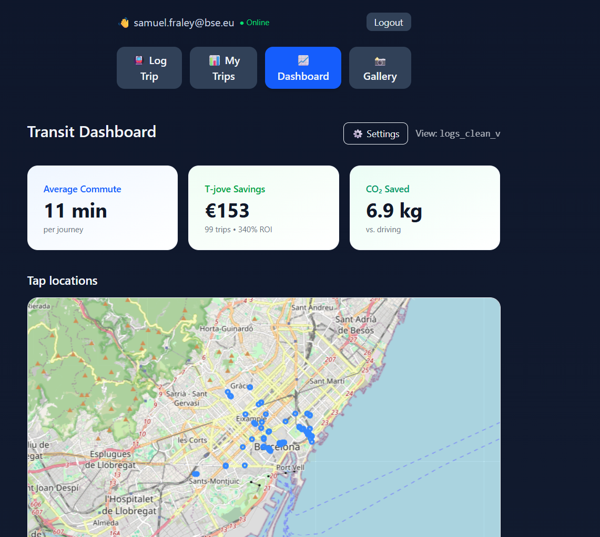

Temple Roster Analysis
Roster construction · Player profiles · Program-level insights
Uses the CFBD API and 247Sports recruiting data to analyze geographic pipelines and talent distribution across Temple's roster.
Loading preview...
Temple football alum and former NFL Next Gen Stats researcher, now studying Data Science in Barcelona.
I've worked across public policy and professional sports, and I'm especially excited about roles with teams or organizations that care about rigorous, decision-focused analytics.
Work spanning sports analytics, NLP, GIS, and applied economics.
Roster construction · Player profiles · Program-level insights
Uses the CFBD API and 247Sports recruiting data to analyze geographic pipelines and talent distribution across Temple's roster.
OL scouting · Rushing offense · FBS benchmarking
Pre-season report on Temple's offensive line using unit continuity metrics, recruit additions, and FBS-wide rushing benchmarks to assess the run game outlook.
Recruiting analytics · Transfer portal · College football
Visual snapshots of recruiting and transfer portal activity across AAC conference programs for the 2026 cycle, mapping high school recruit origins and portal entries and exits by position.
Player tracking · Ball-in-flight separation · EDA
Exploratory analysis of receiver-defender separation at throw and arrival, examining how separation evolves while the ball is in the air.
Player tracking · Data pipeline · Sports science
End-to-end pipeline for ingesting and analyzing NFL 10Hz optical tracking data, built to demonstrate sports science monitoring at scale.
Applied economics research, text analysis, and spatial work.
NLP · EU enlargement · Panel data
Dictionary-based NLP analysis measuring hard and soft criticism in EU Progress Reports across ten candidate countries from 2019 to 2025.
Full-stack app · React + Supabase · Offline-first
A transit logging app for tracking metro journeys across Barcelona, with personal dashboards, leaderboards, and a year-in-review summary.

Digital Mapping · OSM Data · For Fun
Two import locations for grad students in Barcelona. Pulled OSM data and made some maps.
Census LODES · Regional mobility · Workforce flows
Analysis of home-to-work commuting across the 11-county Philadelphia metro area using Census LEHD Origin-Destination data.
Economic indicators · Time series · Policy analysis
Analysis of Philadelphia's inflation trends during the 2022 recovery, comparing local CPI to national patterns across sectors.
I'm a data scientist focused on decision-making problems — using statistical modeling, spatial analysis, and clear communication to help teams act on their data.
I grew up in the San Francisco Bay Area, where I played college football as a linebacker and longsnapper at Foothill College. I later transferred to Temple University in Philadelphia to continue playing and finish my degree. I'm currently studying in the Master's in Data Science for Decision Making program at the Barcelona School of Economics, where my coursework includes causal inference, machine learning, deep learning, and econometrics.
Before starting my Master's, I lived in Los Angeles and worked as a Next Gen Stats Research Analyst at the NFL, developing dashboards and models on player tracking data, and as a data analyst on workforce and economic development projects, supporting public-sector and social impact organizations with analytics and visualization.
Feel free to reach out about data science roles with teams, leagues, or international organizations, or for collaborations on sports analytics and public-policy projects.